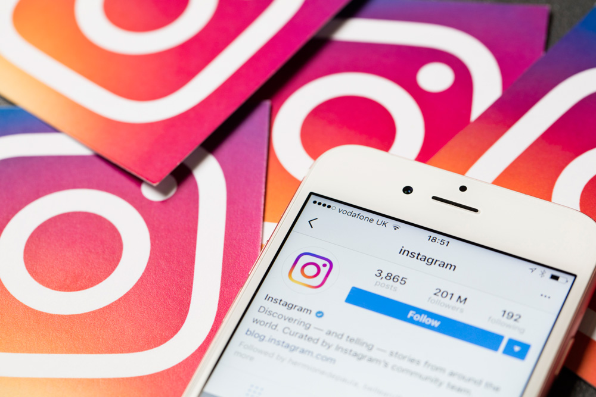

 Instagram je sociální síť, která uživatelům nabízí sdílení fotografií, videí a možnosti interakce v rámci lajkování, komentování a chatování. Pro sdílení fotografií je předpřipravena řada filtrů pro úpravu a vylepšení.
Zakladateli aplikace Instagram jsou Kevin Systrom a Mike Krieger z Burbn, Inc. Oficiálně byla spuštěna v roce 2010.
V roce 2012 Instagram koupila společnost Facebook za 1 miliardu dolarů. Mnoho funkcí tyto aplikace dnes sdílí a jsou reklamně i uživatelsky propojené.
Uživatelé na Instagramu
- 1 miliarda lidí používá Instagram každý měsíc.
- 500 milionů uživatelů se dívá anebo tvoří Instagram Stories každý den.
- 63% uživatelů používá Instagram každý den.
- Gendrové složení je 52% ženy a 48% muži.
- Uživatelé tráví v průměru 28 minut na Instagramu každý den.
- Značky přispívají v průměru 2,5 Instagram stories denně.